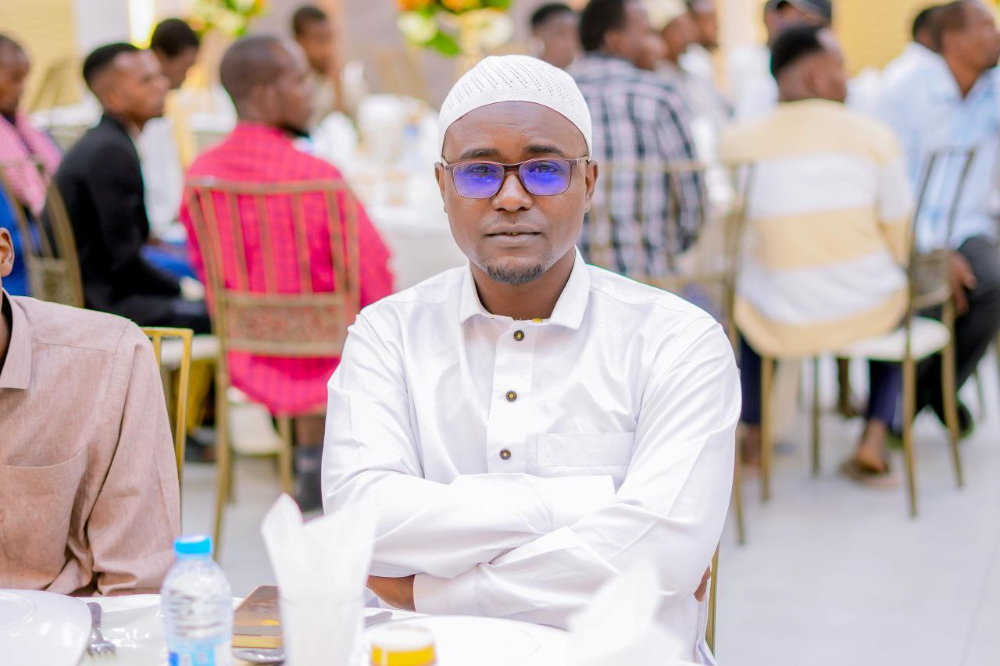

Mohamud

Entry-Level Professional | Forex Trader | Graphic Designer |Full stack web devloper
Personal Profile
Motivated university graduate with strong interest and practical experience in Forex Trading and Graphic Design.
Skilled in market analysis, creative design, and digital tools.
Eager to apply analytical and creative skills in a professional environment and continue developing expertise.
Education
University Graduate Bachelor’s Degree
jubb international University mogadishu
Year of Graduation: 2016
Skills
Full Stack Web Development

- Frontend: HTML, CSS, JavaScript
- Backend: Node.js / PHP / Python (basic knowledge)
- Databases: MySQL / MongoDB
- Responsive web design
- Basic API integration
- Version control (Git)
Forex Trading

- Technical analysis (charts, trends, ICT)
- Risk management and trade planning
- Understanding of currency markets
- Use of trading platforms (e.g., MetaTrader)
Graphic Design

- Logo and brand design
- Social media graphics
- Posters, flyers, and digital ads
- Design tools: Adobe Photoshop, Illustrator, Canva (or others)
General Skills
- Time management
- Attention to detail
- Problem-solving
- Self-motivated and disciplined
Experience
Full Stack Web Developer
- Developed responsive websites and web applications
- Built frontend interfaces and basic backend functionality
- Worked with databases and APIs
- Debugged and improved web performance
Forex Trader (ICT Independent / Self-Employed)r
- Traded Forex markets using ICT (Inner Circle Trader) concepts
- Built frontend interfaces and basic backend functionality
- Applied market structure, liquidity, and order block analysis
- racticed strict risk management and trade discipline
- Maintained trading journals to review and improve performance
Freelance Graphic Designer
- Designed logos, posters, and social media content for clients
- Communicated with clients to understand design needs
- Delivered creative work on time while meeting client requirements
Languages
- English: Good
- ARABIC: Good
- SOMALI: PREFECT
References